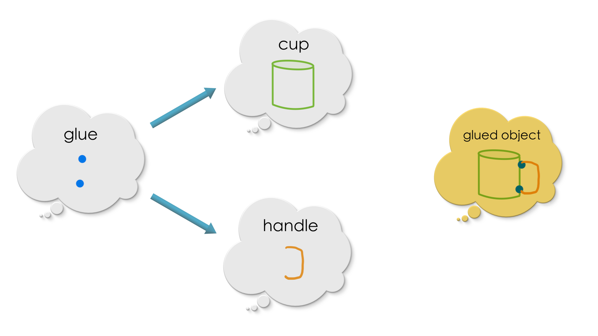
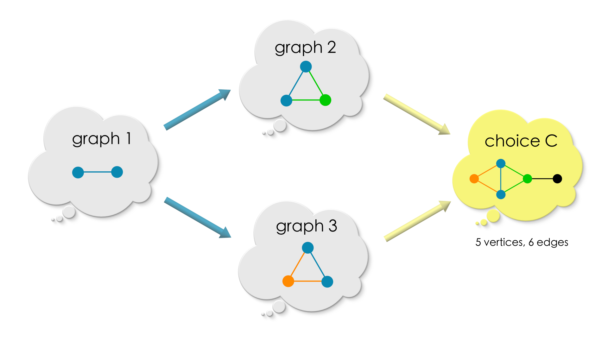
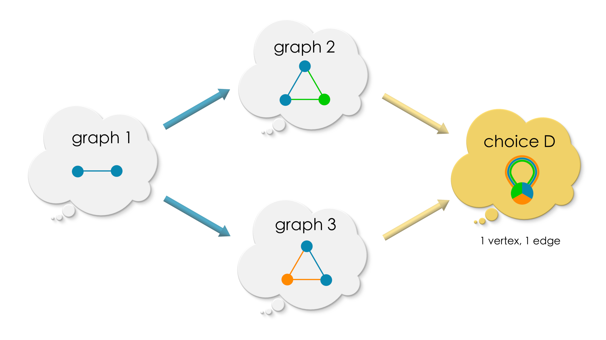

Chapter 6: Combining Graphs#
Note
This book is a work-in-progress! We’d love to learn how we can make it better, especially regarding fixing typos or sentences that are unclear to you. Please consider leaving any feedback, comments, or observations about typos in this google doc.
Note
The Algebraic Julia code of this chapter is available in the repo ToposInstitute/RelationalThinking-code under Ch6.
Attention
This chapter will engage you in deep relational thinking!
Recap#
So far, we have seen that graphs are a simple and powerful tool to model relationships between various entities. We also learnt the idea of identifying one graph inside another via a graph morphism. A graph morphism may coarse-grain the information in the domain graph by sending two different vertices/edges of the domain (the graph from which the morphism proceeds) to the same vertex/edge in the codomain (the graph in which the morphism lands) but it always preserves the connectivity of the domain. Finally, excitingly, with graph morphisms, we enter the “universe” where we can find every possible “graph-world” and every possible relationships between these worlds. We introduced the relational thinking term “category” to refer to a universe.
6.1 Introduction#
In this chapter, we “live” inside the category where the only entities are undirected graphs and morphisms between them.
Inside this category, we are interested to know how to combine two graphs into one which is analogous to adding two numbers (if this analogy sounds odd to you, towards the end of this chapter we will see that adding numbers is same as combining two discrete graphs).
Thinking of a graph as an island of connections, the utility of combining graphs is to bridge these islands allowing for information to flow between the graphs (via common channels) and for the expression of new meanings.
As a step towards making sense of the idea of combining graphs, let us a revisit a graph that we met in the first chapter — “Whose turn is it to do dishes?”.

In this graph, Paul claimed to be friends with Tuco (to our unaware readers, Tuco is Paul’s neighbor’s cat). Paul is also a friend of Brendan, Angeline and Priyaa (co-authors of this book). Encoding these friendships as graphs, we get:

Read each one of the edge in the above graphs as “is a friend of”. Combining the above two friendship graphs along the common vertex Paul into a single friendship graph, we get:

We see new information emerging in the combined graph. Tuco “is a friend of a friend” for Brendan, Priyaa, and Angeline. If we assume that a friend of a friend is a friend, then one can infer that Tuco “is a friend of” Brendan, Angeline and Priyaa. After all, who does not want to be friends with Tuco?! The connections in the combined graph supports such assumptions and inferences.
The above example is deceivingly simple. By eyeballing the two friendship graphs, it is easy to see by common experience how the graphs can be combined. But, graphs generated in the real world[1] are quite complex.

In practice, combining such graphs using pen and paper is out question! However, it is the same common sense that is in play combining even the most complex graphs.
The goal of this chapter is to get our inherent common sense of combining graphs in a computation form while having fun! Once in a computational form, we all can agree unambiguously what does it mean to combine two graphs together. We will achieve this goal by playing a game of dumb charades of graphs using memes from relational thinking (popularly known as category theory)!
The challenge of this game is to communicate what a combined graph is without explicitly saying talking about its vertices and edges! This is because, while in the category we can talk (only) about relationships between graphs. Once we look inside a graph, we will no longer be in the category but we would be inside a graph-world and be unaware of any other (graph) worlds. A combined graph needs to be aware of the graphs which it combined (otherwise it just any old graph). So, we need to stay in the level of category (Rung 4) to talk about combining graphs!
6.2 Combining graphs using memes#
The two memes we will use to play this game are: (1) commuting diagrams (closed loop conditions), and (2) graph morphisms. We explored in the previous chapter, the idea of commuting diagrams and graph morphisms (identifying one graph inside the other).
Game description#
Let us first introduce some terminology: we call the graph we get by combining two graphs as the pushout of the two graphs.
Game description
Goal: To describe the pushout of any two (overlapping) graphs!
Rule: Description of a pushout MUST NOT include its vertices, edges, source and target maps.
A pushout (of two overlapping graphs) of two graphs is a graph in the category (universe) of all possible graphs. We need to spot that graph in this category! We will narrow down our search step-by-step using the memes we have learnt. We will continue this process until we end up with the graph we are looking for.
We will draw lots and lots of diagrams for this narrowing down process! Drawing diagrams are bread and butter of relational thinking!
Let us begin!
The shape of the overlap#
To combine two graphs, we first need to know what are the vertices and edges common to both the graphs. Recollect that the “Paul” vertex was common to both the friendship graphs we met early in the chapter. We call such common vertices and edges between two graphs to be their overlap.
We saw in previous chapters that a graph morphism identifies one graph inside the other. Suppose we are given two graphs – graph A and graph B. An overlap of these two graphs is specified as the diagram below:

The above diagram has two radiating arrows, one into graph A and another one into graph B. Each arrow is a graph morphism. Graph overlap specifies the vertices and edges common to graph A and graph B! Note that a relational specification of common vertices and edges as shown below ensures that the overlapping region will be a graph by itself (no dangling edges)!
The relationships between the graphs in the above diagram are:
overlapmaps intograph A.overlapmaps intograph B.Thus, the regions in which
overlapmaps intograph Aandgraph Bare common to the two graphs.
(The graph morphisms in the above diagram are injective, but in general they need not be so! Connecitivity matters!)
The overlap acts as a bridge between two graphs. Theoretically, presence of an overlap means that we can navigate from one graph to the other via common vertices and edges. That is, we can combine graph A and graph B into a single graph. This idea of a combining graphs can be loosely illustrated as sticking together two sheets of paper using glue.

Another (closer) analogy that comes to mind for combining graphs is glueing a broken handle to a tea cup using two pieces of glue.
{kind=link}
With this analogy in mind, let us think of the pushout of a (overlap) diagram with two radiating graph morphisms!
Key points
A diagram with two radiating morphisms into two graphs is a specification of an overlap of those graphs.

Overlapping graphs can be glued together.
Pass 1: Commuting square#
Now that, we know the overlap, the next step in this game is to narrow down some potential candidates for the pushout. Right now, it could be any graph in the category!
We cannot talk about the pushout graph individually in terms of its source and target maps since we are in Rung 4. (If we do, we will go inside the graph in Rung 2 and all the other graphs will vanish from our view. Thus, the idea of pushout makes sense only at the level of Rung 4.) Hence, we will look at the pushout from the perspective of some other graphs. That is, we are going to ask a few other graphs we are familiar with (in this setting) that,
How is the
pushoutrelated to you?
An old spanish saying goes like this. Tell me who your friends are, and I will tell you who you are!
The most immediate candidates for this enquiry are graph A and graph B since the pushout is given by combining graph A and graph B (along overlap).
Pause and ponder!
If you are graph A, how do you expect yourself to be related to the pushout?
We invite the reader to take a moment to ponder over this question using the picture below.

Since the pushout is given by glueing graph A and graph B along the shape of overlap, at the least, there must:
graph Amust map into thepushout(the cup is in the glued object).graph Bmust map into thepushout(the handle is in the glued object).
Let us add these morphisms to the overlap diagram:

Does this shape look vaguely familiar? If this reminds of you of commuting diagrams (closed loop conditions), Hurray!! Let us first just look at the diagram. There are two paths from overlap to the pushout.
So, overlap can be identified inside the pushout in two ways:
either through
graph A,or through
graph B.
Pause and ponder!
Which one of these is the correct way to identify overlap inside the pushout?
Do you see that ‘irrespective of the path, overlap IS EXPECTED TO be identified precisely in the same region in the pushout because it is common to both graph A and graph B’? Hence, the overlap must map into the same region of the pushout irrespective of the path.
{kind=link}
In the cup-handle analogy, this is analogous to saying that the points in the cup and the points in the handle which are glued together are indistinguishable in the glued object (blue points). The rest of the points can be distinguished as belonging to the cup (green points) or to the handle (orange points).
‘Irrespective of the path,
overlapIS EXPECTED TO be identified precisely in the same region in thepushoutbecause it is common to bothgraph Aandgraph B’. In other words, the diagram with four arrows MUST COMMUTE!
Thus, our enquiry to graph A and graph B have resulted in a condition that a candidate for pushout MUST satisfy! That is, “Diagram: Four arrows” must commute.
Key points
graph Amust map into thepushout(yellow arrow fromgraph A).graph Bmust map into thepushout(yellow arrow fromgraph B).The diagram MUST COMMUTE!

Pass 2: Universal Property#
While not all graphs can make up such a commuting square of pushout, there can more than one graph that can produce a commuting square.
Puzzle
Can you come up with two candidate graphs for pushout that will make the diagram commute.
(If you need help, scroll down further for a few examples.)
As the previous exercise demonstrates, there can be many different graphs that makes the diagram commute. So, we must narrow down further. We will follow the same technique of asking other graphs,
What is your relationship with the
pushout?
So, to which graphs should we ask the above question? We have already covered graph A, graph B, overlap and have ended up with some potential candidates. The pushout we are looking for is inside this candidates set! We shall ask the graphs in set, “What is your relationship with the pushout?”
To do so, we are going to do step outside the game for a moment and sharpen our instinct about pushouts. For this, we will say concretely what overlap, graph A and graph B!

The overlap maps into graph A and graph B as follows:
A few possible choices of pushout graphs of the above diagram are:
(1) Is the following a commuting diagram?

(2) Is the following a commuting diagram?

(3) Is the following a commuting diagram?
{kind=link}
(4) Is the following a commuting diagram?
{kind=link}
We invite the reader to to have a careful look at each choice and convince oneself that each of these diagrams commute.
Pause and Ponder!
Which one the graphs inside the yellow boxes will be your choice for pushout?
We want the pushout to be “the most natural choice” among all possible choices of graphs. By most natural, we mean a choice which will follow “the principle of least effort” or the “path of least resistance” (as nature does).
In the above graphs, which one is your most natural choice for a pushout and why?
While we will reveal our choice in a moment, let us have a look at each one of the choices.
In
choice 1, except for the overlap, the vertices and edges fromgraph A, and the vertices and the edges fromgraph Bare clearly distinguishable. The information ofgraph Aandgraph Bremain intact (except at the overlap).In
choice 2, the boundaries ofgraph Aandgraph Bfade beyond the overlap region.In
choice 3, there is an extra vertex and an edge.choice 4represents maximal collapse of information - all the vertices and edges fromgraph Aandgraph Bare squeezed into a single vertex and edge in the possible graph.
choice 1 has the feeling of the most lazy choice / least effort since graph A and graph B are kept seperate except for the overlap region. It does nothing extra like coarse-graining information like choice 2 and choice 4, or to add extra information like choice 3. Indeed choice 1 is our choice!
We shall now make our intuition of least effort precise by asking,
What is the relationship of
choice 1with all the other choices, and vice versa?
Let’s begin our quest for these relationships!
|| choice 1 vs choice 2 ||

We have two commuting diagrams - one with choice 1 and another one with choice 2. Next we see how they are related with each other.
{kind=link}
There are many graph morphisms from graph choice 1 to graph choice 2. But there is exactly one morphism (dotted) that will make the 2 three-sided diagrams (marked by two yellow triangles) commute. This dotted arrow is again the most intuitive one, mapping blue vertices/edges to blue, green vertices/edges to green, orange to orange. This arrow from choice 1 to choice 2 is dotted to signify that there is only one such morphism.
The above diagram has 4 commuting diagrams pasted together (including the 2 squares [2] starting at
overlap). Commuting diagrams are like ecosystems in balance. When ecosystems are pasted together along their edges, any change in one ecosystem will create a change in the other. When the “most natural” information flows along the morphisms, all the ecosystems are in balance.
{kind=link}
Now for the other direction, are there maps from choice 2 to choice 1 all possible closed shapes in the above diagram will commute simultaneously? Nope, there is no such embedding — the orange-green vertex of choice 2 can be mapped to either the orange or the green vertex of choice 1. If it is mapped into the orange vertex, then the upper triangle does not commute. If it is mapped into the green vertex, then the lower triangle does not commute. Since choice 2 has coarse-grained the information of graph A and graph B, the information cannot be fine-grained again! So no map in the backwards direction!
Score choice 1: 1, choice 2: 0
|| choice 1 vs choice 3 ||
{kind=link}
As before, there is exactly one (obvious) choice of morphism from choice 1 to choice 3 that will make the triangles commute.

However, there are at least two ways in choice 3 maps into choice 1 to make the triangles commute. The grey vertex in choice 3 can be mapped to one of the two blue vertices in choice 1. Both these choices are equally good! Because, choice 3 has extra information, that is a vertex and an edge neither from graph A nor from graph B, there is more than one way of mapping this extra information into the most lazy choice 1.
Score choice 1: 1, choice 4: 0
|| choice 1 vs choice 4 ||
{kind=link}
As before, there is exactly one (obvious) choice of morphism from choice 1 to choice 4 that will make the triangles commute.
{kind=link}
However, choice 4 does not embed in choice 1 because of its self-loop.
Score choice 1: 1, choice 4: 0
Our choice of a pushout graph having such universal nature is an indication that we got our plumbing right and things will flow smoothly! In relational thinking terms (category theory), this is called a universal property of an object.
Tip
Universal property is the mathematical name for “harmony” of relationships.
Whewww!! That is some hard core relational thinking!
Key points
The pushout satisfies a universal property: the pushout has a unique arrow into any other graph which satisfies Pass 1, such that two triangles commute!
{kind=link}
Pass 3: Uniqueness#
We have progressed quite a bit! Let us review our progress so far! In this game, to begin with, a pushout could be any graph in the space of all possible graphs.
Pass 1: Commuting square:-
By asking overlap, graph A, and graph B, “What is your relationship with the pushout?”, we narrowed down a set of candidates for the pushout from the space of all graphs. Each one of these candidates (graph X) make the above diagram commute!
Pass 2: Universal property:-
By asking the same question to all the candidates that made through Pass 1, we narrowed down the candidates to those which satisfy the universal property: which have exactly one morphism into any other candidate such that the two triangles (in the above diagram) commute simultaneously.
Now,
We repeat the same procedure of asking “What is your relationship with the
pushout?” on the candidates that made through Pass 2!

Our goal is to finally end up with one pushout graph!! Recall that the pushout we are looking for is one among the remaining candidates.
Suppose some graph X made it through Pass 2 along with the pushout. What is its relationship with the pushout?
Both graph X and the pushout satisfy the commuting square requirement of Pass 1. However, graph X is universal (satisfies the universal property). So, graph X must have a unique map into the pushout that makes the triangles commute.
{kind=link}
However, the pushout is also universal. So it must have a unique map into graph X that makes the triangles commute.
{kind=link}
However, all the commuting shapes of pass 1 and pass 2 tell us that these two maps between the pushout and graph X are inverse of each other – isomorphisms (If are interested in knowing why, check the box below. )! In other words, THE pushout AND graph X ARE ONE AND THE SAME!! All the candidates which made through Pass 2 are isomorphic! We have found our pushout!!
Why are Graph X and the pushout the same?
In the above diagrams, the pushout has a unique mapping into graph X, and graph X has a unique mapping into X2. These two maps make all the four triangles commute in unison!
{kind=link}
Since the upper two triangles commute in the above diagram, the upper triangle in the below diagram commutes. Similarly for the lower triangle.

There is one other arrow from the pushout to pushout which can make the above diagram commute: The “be-as-you-are” arrow (that which maps each vertex to itself and each edge to itself):
{kind=link}
Because the map pushout —> graph X —> pushout is unique, there is ONLY ONE arrow which makes the two (big) triangles commute. However, we have two mappings. So, both of them should be the same! Hence,
{kind=link}
“Graph X1 —> Graph X2 —> Graph X1” and “be-as-you-are” arrows are the same.
Similarly, we can prove that “Graph X2 —> Graph X1 —> Graph X2” and “be-as-you-are” arrows are the same:
{kind=link}
Important
Note that Pass 3 did NOT impose any requirement like Pass 1 and Pass 2 to narrow down candidates. The result of Pass 3 that all the candidates which made through Pass 1 and Pass 2 are isomorphic is a consequence of the existing requirements.
Key points
A pushout is any graph which makes it through Pass 2 (and Pass 1).
6.3 What is a pushout?#
The goal game was to say describe the pushout of an overlap diagram is without talking about its connectivity (vertices and edges). We used the relationships between various graphs and the pushout to describe what the pushout must be! Let us summarize our description of pushout of an overlap diagram.
We start with overlap with two radiating morphisms specifying the common vertices and edges of graph A and graph B. We call this an overlap diagram.

We compute the pushout of an overlap diagram. The pushout is a graph which satisfies:
Pass 1: Commuting square :- The following square must commute.
Pass 2: Universal property: For any other choice of graph which satisfies Pass 1’s requirement, there is exactly one (a unique) map from the pushout into that choice such that the triangles commute.

As a consequence of these requirements, all graphs which satisfy both these requirements are “practically the same”.

Key points
Relational thinking narrows down a solution from the space of all sensible structures by methodically reflecting on “WHAT” is that we are looking for rather than focusing on “HOW” to construct a solution and verifying that the construction will always produce a sensible solution for all scenarios.
In this sense, relational thinking is non-invasive!
6.4 Puzzle time!#
Let us compute the pushout of the following diagrams.
Puzzle 1. Pushout using a single vertex

Solution

Puzzle 2. Pushout using a single edge
This one is a little tricky, because the two vertices (”A” and “B”) in overlap embeds into the same vertex of graph B (”A,B”), thereby coarse-graining the information in overlap. However, vertices “A” and “B” in overlap embeds in separate vertices in graph A. So, how would the overlap region look in the pushout graph?

Solution
Since graph A and graph B has to agree in the overlap region, and graph B has only coarse-grained embedding of overlap, the embedding of graph A in the pushout, coarse-grains the overlap region of graph A to match the overlap region of graph B.

Puzzle 3. Pushout using an empty graph
In the beginning of this chapter, we said that combining graphs is analogous to adding numbers. Can you see how this problem demonstrates this analogy?

(An empty graph is the graph with its set of vertices and the set of edges to be empty set. The sources and the target maps sends “no vertex” to “no edge”.)
Solution

When there is no glue (graph O is empty), the pushout just has graph A and graph B side by side with no bridge in between them. graph A has three vertices and no edges. graph B has two vertices and no edges. The pushout has 5 vertices which is the sum of vertices in graph A and vertices in graph B. Sum of two numbers is just a pushout . Isn’t that cool ?!
Ex 4. Finite Pushout
Let us suppose, we want to glue more than two graphs together! That seems to be a reasonable ask! So we got a diagram like the one below.

What are the requirements for a graph to be pushout of the above diagram?
Clue: Extend the requirements in Section 6.4 from 2 to n graphs!
6.5 Computing pushouts in AlgebraicJulia#
In the previous section, we hand-computed the pushout of the diagrams. This section shows how we can program a computer to compute pushout using AlgebraicJulia. The reader is welcomed to run each of these code snippets and verify the output with their pushout graphs!
Puzzle 1#
# Puzzle 1
#-----------
# Puzzle 1
#-----------
using Catlab
# Graph with a single isolated vertex
Overlap1 = SymmetricGraph(1)
# Create a triangle
graphA = cycle_graph(SymmetricGraph, 3)
# Initialize this graph as an isolated edge
graphB = path_graph(SymmetricGraph, 2)
# Then modify it to add a loop to vertex #2
add_edge!(graphB, 2, 2)
# There are three possible morphisms from the isolated vertex into a graph
# with three vertices. Because these three vertices are equivalent due to
# the symmetry of the triangle, it doesn't matter which one we pick. So,
# rather than manually specifying how Overlap1 matches to parts of graph A, we
# use the automatic homomorphism search which will pick an arbitrary one.
graphA_map = homomorphism(Overlap1, graphA)
# Because the two vertices of graph B are *not* equivalent (one has a loop,
# the other doesn't) we have to be more precise in our construction of
# the map from Overlap1 into graph B. The only data required is saying where
# the vertex of Overlap1 is mapped to. We send it to vertex#1, which is
# the one which does *not* have a loop.
graphB_map = ACSetTransformation(Overlap1, graphB; V=[1])
# Glue together graph A and graph B along their common overlap, Overlap1
pushout_graph = colimit(Span(graphA_map, graphB_map));
# Visualize the result
to_graphviz(apex(pushout_graph))
Use the code cell at the end of the section to visualize graph A and graph B.
Puzzle 2#
# Puzzle 2
#-----------
using Catlab
# Our overlap is an isolated edge
Overlap2 = path_graph(SymmetricGraph, 2)
# Create a triangle
graphA = cycle_graph(SymmetricGraph, 3)
# Initialize this graph as an isolated edge
graphB = path_graph(SymmetricGraph, 2)
# Then modify it to add a loop to vertex #2
add_edge!(graphB, 2, 2)
# Again, the three possible morphisms out of Overlap2 (each of
# which picks an edge of the triangle, G2) are equivalent, so
# we don't need to pick a specific one: we let the automatic
# search algorithm find it for us.
graphA_map = homomorphism(Overlap2, graphA)
# Again, we need to be more precise in how we map into G3
# because it matters whether or not the overlapping edge is
# the loop or the other edge. Here, we specify the loop by
# initializing the homomorphism search (via the `initial`
# keyword). In this case, the morphism is fully determined
# once we declare that both vertices of Overlap2 are sent
# to vertex#2 in G3.
graphB_map = homomorphism(Overlap2, graphB; initial=(V=[2, 2],))
# Once again we glue together G2 and G3 along Overlap2
pushout_graph = colimit(Span(graphA_map, graphB_map));
to_graphviz(apex(pushout_graph))
Use the code cell at the end of the section to visualize graph A and graph B.
Puzzle 3#
# Puzzle 3
#-----------
using Catlab
# The graphs here are all discrete (no edges)
Overlap3, graphA, graphB = SymmetricGraph(0), SymmetricGraph(3), SymmetricGraph(2)
# morphisms out of an empty graph are themselves 'empty'
# (they require no data other than the domain and codomain)
graphA_map = ACSetTransformation(Overlap3, graphA)
graphB_map = ACSetTransformation(Overlap3, graphB)
# We glue together the discrete graphs along the empty overlap
pushout_graph = colimit(Span(graphA_map, graphB_map));
to_graphviz(apex(pushout_graph))
Use the code cell below to visualize graph A and graph B.
# Use this code cell for visualizing `graph A` and `graph B`
# UNCOMMENT the below line (remove the sharp) and run the code to view `graph A`
# to_graphviz(graphA)
# UNCOMMENT the below line (remove the sharp) and run the code to view `graph A`
# to_graphviz(graphB)
6.6 Summary#
Congratulations!! You have crossed Chapter 6 successfully!
Things get quite complex and rich quickly as we add relationships and ask the relationships to satisfy more and more constraints. However, setting things up right and relational makes life better because all the nuances are handled early-on in the thinking process. This eliminates the need to think cleverly about the edge cases later on when the complexity of the system increases. We will demonstrate this idea in the next chapter when we look into the concept of “find and replace” inside graphs! You would be accustomed to using the “find-and-replace” operation in text editors. In the next chapter, we shall apply the idea of “find-and-replace” to graphs by computing pushouts.
It only gets easier from here!!